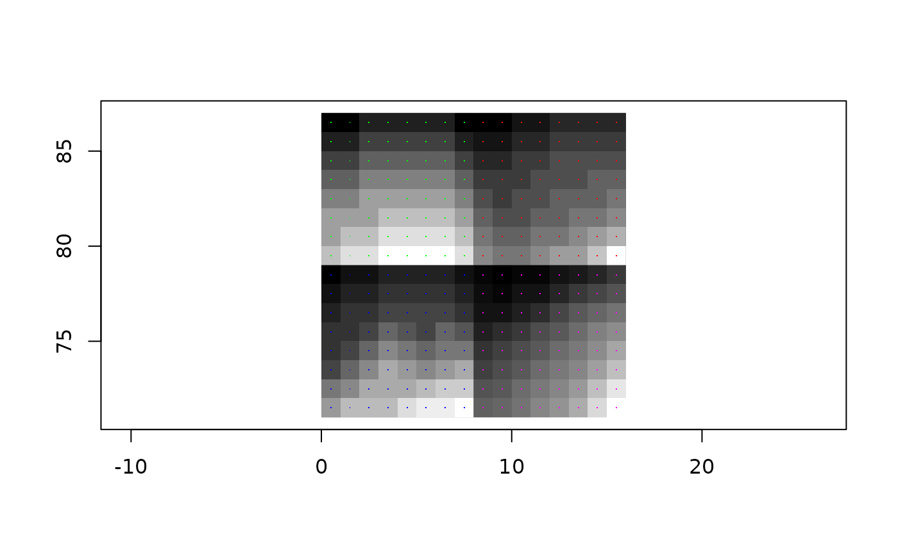

Unlike grd_tile_template(), which returns a grd() whose elements are
the boundaries of the specified tiles with no data attached, grd_tile()
returns the actual tile with the data.
grd_tile(grid, level, i, j = NULL)
# S3 method for wk_grd_rct
grd_tile(grid, level, i, j = NULL)
# S3 method for wk_grd_xy
grd_tile(grid, level, i, j = NULL)A grd_xy(), grd_rct(), or other object
implementing grd_*() methods.
An integer describing the overview level. This is related to
the step value by a power of 2 (i.e., a level of 1 indicates a step of
2, a level of 2 indicates a step of 4, etc.).
1-based index values. i indices correspond to decreasing
y values; j indices correspond to increasing x values.
Values outside the range 1:nrow|ncol(data) will be censored to
NA including 0 and negative values.
A grd_subset()ed version
grid <- grd_rct(volcano)
plot(grd_tile(grid, 4, 1, 1))
plot(grd_tile(grid, 3, 1, 1), add = TRUE)
plot(grd_tile(grid, 3, 1, 2), add = TRUE)
plot(grd_tile(grid, 3, 2, 1), add = TRUE)
plot(grd_tile(grid, 3, 2, 2), add = TRUE)
grid <- as_grd_xy(grd_tile(grid, 4, 1, 1))
plot(grid, add = TRUE, pch = ".")
plot(grd_tile(grid, 3, 1, 1), add = TRUE, col = "green", pch = ".")
plot(grd_tile(grid, 3, 1, 2), add = TRUE, col = "red", pch = ".")
plot(grd_tile(grid, 3, 2, 1), add = TRUE, col = "blue", pch = ".")
plot(grd_tile(grid, 3, 2, 2), add = TRUE, col = "magenta", pch = ".")
